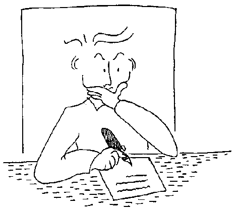

|
Texel-Hilfe

Einleitung
Beispiele
Überblick
Installation
Organisation
Einstellungen
Schülerdaten
Layout
Dateivorlagen
Schreiben
Einlesen
Korrigieren
Ausdrucken
Lückentexteditor
Kontakt
|
Eine Zeugnisverwaltung für Waldorfschulen
Die Programme sind in den Jahren 2000 bis 2004 an der Freien Waldorfschule Elmshorn entstanden. Zur Zeit wird es von 9 unserer 12 Klassen benutzt. Das Programm ist inzwischen so weit gereift, dass das, was sich automatisieren lässt, in das Programm eingearbeitet ist. Eine straffe Organisation und Terminvorgabe ist allerdings vonnöten.
Sollten Sie das Programm einsetzen, teilen Sie mir bitte Ihre Erfahrungen mit. Nur so kann das Programm weiter verbessert werden.
Veit Grösch
Freie Waldorfschule Elmshorn
Adenauerdamm 2
D-25337 Elmshorn
E-Mail: Texel@Waldorf-Elmshorn.de
Im Internet finden sie ein Forum zum Austausch von Erfahrungen und eine Seite mit häufig gestellten Fragen:
www.waldorf-elmshorn.de/Texel
|